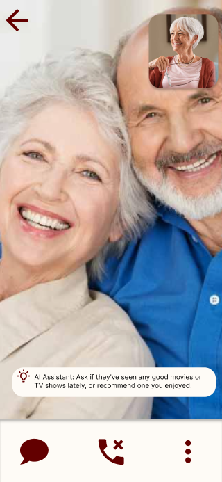
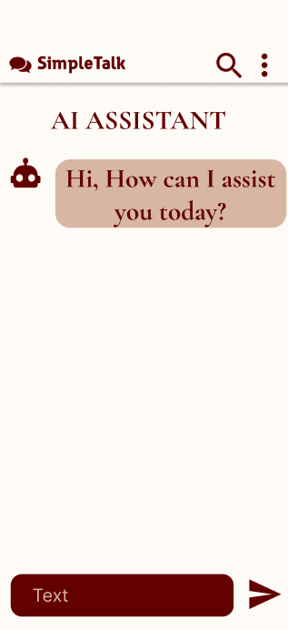
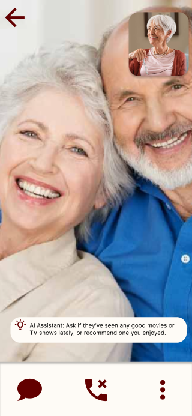
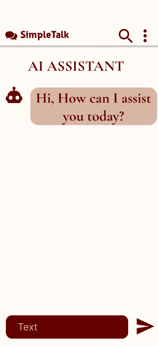

By Mohammad Usman, Nicholas Werugia
Introducing SimpleTalk, a video/messaging App designed specifically for people 65 & over. It's simple and direct design allows the elderly to easily navigate through the app, find contacts and make calls. The application has a simple messaging interface that provides clear messaging. There is a built-in AI assistant that can provide the user with any help in regards to navigating or using the app. It also provides flashy news prompts/ suggest topics on the screen, during video calls, based on their interests, so that they can find things to talk about. They are also taken care of from the start of the process by being told exactly where to click. They are also continuously shared with exactly what data the application has gathered from them in order to maintain transparency. Many add-on features exist and. With an AI assistant chatbot that resembles the voice of a real human, family/friend based support and direct call support. This creates the best experience for the elderly to not feel as alone with their relative. It removes the barrier of technology being so difficult to use.
The first step before designing the UI/UX of any product is to understand the persons that will be using your product, as it will allow the designer/developer to ensure a final product that will fulfill the needs and preferences of the user. Especially in our case, where our user base, the elderly, is a group that is faced with many challenges with using modern technology in their day to day life, it is of utmost importance that we understand our user completely to be able to produce something that will actually benefit them. So, we have decided to conduct our research through online surveys and interviews. Since not all of the elderly population might be using social apps and the internet, we decided to conduct interviews to increase the quantity of our research subjects to ensure accuracy in understanding their needs.
We decided that it would be best to conduct our surveys using google forms as they are simple and easy to customize and we assumed that most of the elderly population would be familiar with gmail. We constructed a brief questionnaire highlighting the everyday issues/difficulties that the elderly faced with using websites/apps. We distributed this survey over social platforms like LinkedIn, WhatsApp Groups, Reddit, etc. Since we expected the responses (online) to be low, however, the response we received helped us understand the difficulties faced by elderly who were actively using websites/apps. After analyzing the data we concluded the following results:

Since we were aware that responses from elderly people online would not be quick and a lot, we decided to conduct a small brief interview with elderly alongside our survey. The interview had open-ended questions regarding the design preferences and features the user would like to see. Due to time constraints, we conducted these interviews with elderly in our family and others we knew outside the family. At the end of our interviews, we arrived at a similar result as we got in our online survey which showed a consistency in the difficulties and improvements our users needed.
After carefully examining our received data, we were able to come up with two user types that closely represent the people that will be using our application. We have specified their details like age, gender, description about them, goals, frustrations, etc. These user personas differ in age, status, goals and personal background.
Samantha is the "The Extrovert". She used to work as a nurse, and during her professional life she used to deal with a lot of patients on the daily basis. She enjoyed talking with her patients the most. She wants to talk to her friends and familay all day. She feels that the isolation for COVID-19 has changed things for her a lot and affected her mental health.
Albert is the "The Introvert". He is a retired veteran, who for most of his life has only know war and violence. His involvement with the army casued him to neglect his family. At his grand age of 70, all he wants now is to spend what time he has left with his family. But, COVID-19 has put water on his plans as he had to isolate for his own safety. He is very frustrated with this situation, as now he has to familiarize himself with mordern techology/apps to talk to his family. He finds them very complex and confusing as he is only familiar with email.
.png)
User journeys are the path that a user takes when they use a new product, to decide whether it is useful for them or not. Creating the User Journeys for the personas we created helped us in creating the best possible user experience
for our users. We made use of a template online, that helped us to outline the actions the user makes and identify the pain points/troubles the user faces in the journey and try to provide solutions for it.
Samantha was pleasesd with the app and its messaging interface and experience. But she find it irritating that, when she was in a video call, if she wanted to send a message/file to someone, she would have to go back to the
chat page to send the message and come back to the video call. We decided to add a small message icon in the video call panel, which would pop up a small text box where she could send the message/file without exiting the video
call page.
Albert was unable to locate some of the buttons and found it difficult and confusing with all the navigation going on. We improved on these pain-points in our prototype by increasing the size of the icons and reducing the
the number of navigations by identifying the useless ones.
Our Application is name SimpleTalk. It's in the name itself, we aim to make commmunication through messages and calls simple and stress-free for the senior citizens. We thought that this name, being so simple, would stand out to the elderly population
and they would quickly know what the application offers.
In the application, the user will be able to create an account using their email/password and link their mobile number. All their contacts will be listed on a single page from where they could easy select who they want to talk to. The application provides
the user with the ability to message, call and video call. There is an AI assistant button that will help the user with any help they require on using the app. There will be an artificial intelligence algorithm that will initiate during video calls and based
on the users talk pauses and interests it will show news prompts/ topics so that the user never has a single moment of silennce.
To begin with, we decide to start with a high level hand sketch of the inteded design of the application we imagined. We identified that our application would require 4-5 pages. Then we began by thinking about the layouts of the different pages we have. We started to place textboxes and texts to create a simple login layout. Similarly, we designed a simple layout for the other pages and also identified the various appropriate icons we might need to make it easier for our elderly people to identify and understand the use of those icons.
After designing the layout, we understood that we needed a list to show the contact lists. We would need the AI assistant to be an icon that is easily visible to the elderly. We decided to place the users camera output in the top right corner initially and allow the user to move it as per their choice. The AI suggestions during video call, we decided that they will appear at the bottom center of screen and be visible for a time limit.
Before we started to create our prototype, we wanted to decide on a color palette that we would be using for our application. From our survey, we found that the elderly preferred bright/warm colors. After browsing the internet, we found a palette that was simple and would put less strain on the user eyes, at the same time being pleasing to the eyes.
Primary
Secondary
Typography
Alternate Typography
Since we are developing for the elderly, as we did for the color palette, here too we needed to consider some aspects such as simple style which is easily readable at smaller and larger fonts. Based on these requirements we
searched the internet for the appropriate font types and selected the following one to use in our applocation.
The font type we selected for the text is our application is called Garamond. This is a simple font that is usually used for book printing. We found this font to be simple and easy to read and it also has a a sixteenth-eighteenth
century feel.
After finalizing our color palette and font styles, we were now ready to convert our high-level design layouts to mockups of how the application would look on the device. We made use of Figma to help us in building these mockups. The Mockups might look similar to the UI available on as we did not try to be to complex by using the already simple interfaces and modifying the complex ones for our user target. We have a darkish red color that we used as our secondary and it is used for most of our buttons, icons, etc. as it is the darkest colored in the palette and is easily identifiable.
 



This is the final part of this assignment. Figma allows us to view the prototype of our application on differetn devices allowing us to experience the UI and UX together to get a sense of how the application would work in real life. Th prototype starts with the login page after which the user is taken to the contact lists page. From here User selects the contact to chat with and is taken to the chat page. There the user can message or call using the buttons. The video button initiates a video call and the it can be seen in the next frame. The final frame shows the AI assistant chat that can be accessed by clicking the robot on the bottom left of frame 2.
This project allowed us to experience the process of designing the UI an UX of an application. First, we started with understanding our target audience and collecting data by conducting survey and intreviews. Based on that we created User Journey and User Personas that provided us with possible user types. After all this information, we were ready to do high-level layouts to use as a base for mockups. We learned how to analyze our users and select the color palettes and fonts that would be best for their needs. After this step, we are ready to create our mockups and and test them in a protoype. At the end, this project provided us with a detailed hands on experience on how a UI and UX is designed for your user and the importance of understanding your target audience.